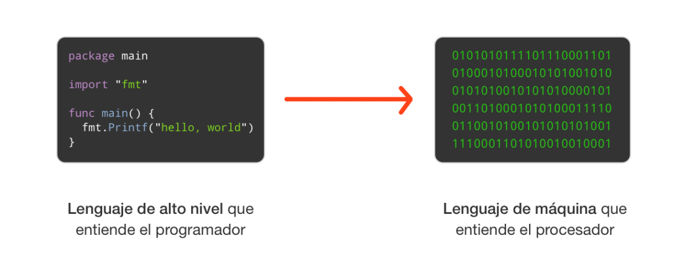
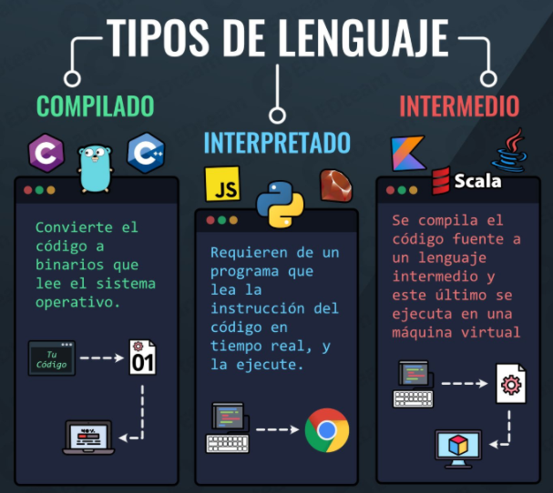

Programa¶
Programa¶
Un programa es una secuencia de instrucciones que un ordenador ejecuta para realizar alguna tarea. Parece una idea bastante simple, pero para que el ordenador pueda hacer uso de las instrucciones, deben estar escritas de forma que las pueda usar. Esto significa que los programas deben estar escritos en lenguajes de programación.
El código son las instrucciones que le dice al ordenador qué debe hacer en un el lenguaje entendible por la máquina.
Lenguajes de programación¶
Un lenguaje de programación es un conjunto de reglas y símbolos que permiten a los programadores comunicarse con un ordenador.
Los lenguajes de programación se clasifican en varios tipos. Para que entiendas un poco mejor, por qué hay varios tipos, piensa en los idiomas.
Aunque podemos escribir, leer y usar cualquier idioma para cualquier cosa, algunos tienen unas ventajas que otros no. Por ejemplo, el comercio mundial está dominado por China, por lo que saber chino te proporciona una ventaja competitiva. Por su parte, la ciencia se escribe en inglés, así que, si eres científico y deseas publicar los resultados de tu investigación, es obligatorio hacerlo en inglés. O, por ejemplo, si te dedicas a la Teología, saber latín es fundamental y si te dedicas a la arqueología egipcia, conocer el idioma de los jeroglíficos es una necesidad.
A los lenguajes de programación les pasa lo mismo, podemos escribir prácticamente cualquier programa con una inmensa mayoría de lenguajes, pero unos están más indicados o han sido específicamente diseñados para resolver un tipo concreto de problemas o en un conjunto de contextos determinados.
Veamos los tipos que existen:
-
 Lenguajes de bajo nivel
Lenguajes de bajo nivel
Un lenguaje de bajo nivel es un tipo de lenguaje de programación que está cerca del lenguaje máquina, permitiendo un control directo sobre el hardware, ejemplos de estos son el lenguaje ensamblador y el lenguaje máquina.
- Lenguaje máquina: es el nivel más básico de programación, compuesto de instrucciones binarias que la CPU puede ejecutar directamente.
- Lenguaje ensamblador: es una representación simbólica del lenguaje máquina que utiliza mnemotécnicos en lugar de códigos binarios, facilitando la programación a nivel de hardware.
-
Lenguajes de alto nivel
Un lenguaje de alto nivel, por otro lado, está diseñado para ser más fácil de usar y entender por los humanos, alejándose de los detalles del hardware y proporcionando abstracciones más poderosas; ejemplos de lenguajes de alto nivel incluyen Python, Java y C++. Los dos subtipos principales que contiene son:
- Imperativos: se centran en describir cómo se debe realizar una tarea mediante instrucciones secuenciales. Ejemplos: C, Pascal.
- Declarativos: se enfocan en qué es lo que se quiere lograr sin especificar cómo se debe hacer. Ejemplos: SQL, HTML.
-
Lenguajes de script
Los lenguajes de script son lenguajes de programación que se utilizan principalmente para la automatización de tareas y el desarrollo de aplicaciones web, y son conocidos por su simplicidad y flexibilidad; ejemplos incluyen JavaScript y PHP.
-
Lenguajes de propósito específico
Los lenguajes de propósito específico están diseñados para resolver problemas específicos dentro de un dominio particular, como R para estadística y MATLAB para aplicaciones matemáticas y de ingeniería.

El proceso de traducción¶
Como el computador puede interpretar y ejecutar únicamente código máquina, existen traductores que traducen programas escritos en lenguajes de programación a lenguaje máquina. El programa inicial se denomina programa fuente y el programa obtenido, programa objeto.
La traducción por un compilador (la compilación) consta de dos etapas fundamentales: la etapa de análisis del programa y la etapa de síntesis del programa objeto. El análisis del texto fuente implica la realización de un análisis del léxico, de la sintaxis y de la semántica. La síntesis del programa objeto conduce a la generación de código y su optimización.
Compiladores e intérpretes¶
Un compilador traduce un programa fuente, escrito en un lenguaje de alto nivel, a un programa objeto, escrito en lenguaje ensamblador o máquina. Un intérprete hace que un programa fuente escrito en un lenguaje vaya, sentencia a sentencia, traduciéndose y ejecutándose directamente por el computador.

Actividades¶
📝 AA4.7 Lenguajes de programación¶
(C.ESP1 / CE1.2 / IC1-3p)
- Explica qué es un programa y por qué no puede ejecutarse directamente si está escrito en un lenguaje de alto nivel.
- ¿Por qué existen distintos lenguajes de programación si, en teoría, todos permiten resolver problemas similares?.
- Explica la diferencia entre programa fuente y programa objeto.
- ¿Qué ventajas tiene un lenguaje interpretado para el aprendizaje de la programación?.
- ¿Por qué algunos lenguajes siguen siendo compilados hoy en día?.
- Completa la siguiente tabla:
| Característica | Compilador | Intérprete |
|---|---|---|
| Traducción del código | ||
| Ejecución del programa | ||
| Detección de errores | ||
| Ejemplo de lenguaje |